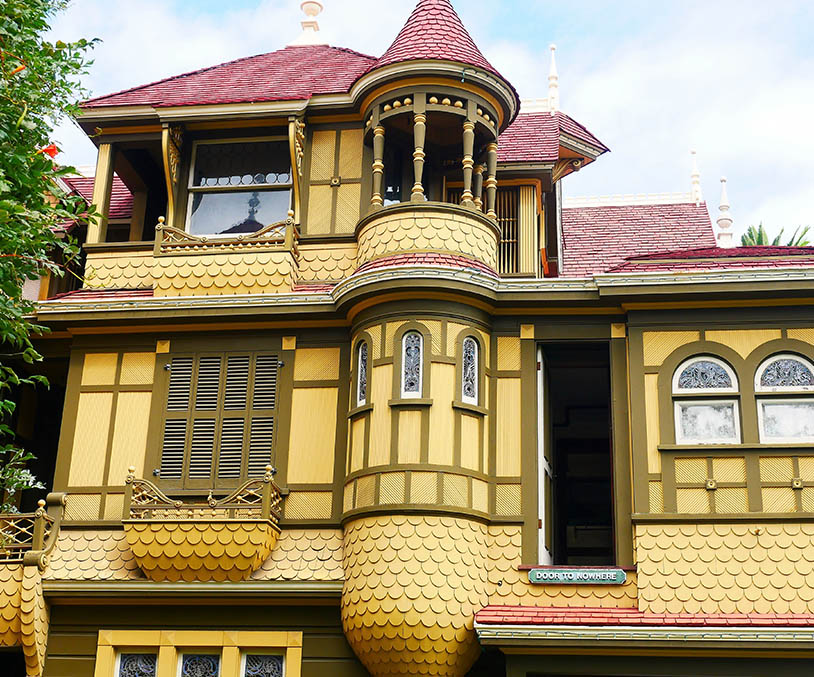
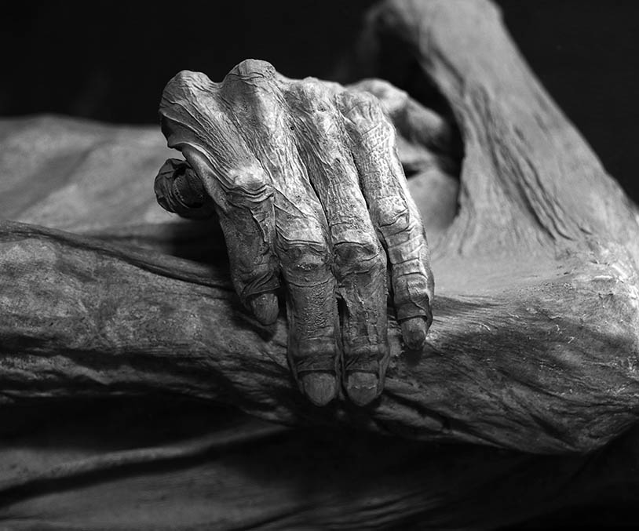

The Winchester Mystery House and the Mummy museum in Guanajuato are two spooky locations that encourage visitors. These spots have developed their own way to share the stories with the public and make money from it at the same time. These spots have become popular tourist attractions for those with morbid curiosity.
Winchester Mystery House
The Winchester Mystery House is a mansion in San Jose, California, that was once the personal residence of Sarah Winchester, the widow of firearms magnate William Wirt Winchester. The house became a tourist attraction nine months after Winchester's death in 1922. The Victorian and Gothic style mansion is renowned for its size and its architectural curiosities.
It is sometimes claimed to be one of the “most haunted places in the world”, but there is no evidence to support this belief. Much of the lore regarding the Winchester House and its owner is fanciful, unverified, and often provably false.
Beginning around 1895, Winchester started appearing in newspapers. The articles in these local papers were filled with speculation about Winchester and the ongoing construction of her San Jose home. Her lack of interaction with neighbors and the known fact that her money came from the firearms industry fed into a superstitious narrative, despite large, ornate homes being commonly built by the wealthy. The newspapers declared that the reason that the construction was ongoing was that Winchester feared she would have bad luck if the construction would stop. This theory eventually grew into stories that she believed she would die if construction stopped. (source)
Mummies of Guanajuato
The Mummies of Guanajuato are a number of naturally mummified bodies interred during a cholera outbreak around Guanajuato, Mexico in 1833.
The human bodies appear to have been disinterred between 1870 and 1958. During that time, a local tax was in place requiring a fee to be paid for "perpetual" burial. Some bodies for which the tax was not paid were disinterred, and some—apparently those in the best condition—were stored in a nearby building. The climate of Guanajuato provides an environment which can lead to a type of natural mummification, although scientific studies later revealed that some bodies had been at least partially embalmed. By the 1900s the mummies began attracting tourists. Cemetery workers began charging people a few pesos to enter the building where bones and mummies were stored.
The first mummy was put on display in 1865. It was the body of Dr. Remigio Leroy. The museum, containing at least 108 corpses, is located above the spot where the mummies were first discovered. Numerous mummies can be seen throughout the exhibition, of varying sizes. The museum is known to have the smallest mummy in the world, a fetus from a pregnant woman who fell victim to cholera. Some of the mummies can be seen wearing parts of the clothing in which they were buried. This place was subsequently turned into a museum called El Museo de las Momias ("The Museum of the Mummies") in 1969. As of 2007, 59 mummies were on display, of a collection that totals 111. (source)